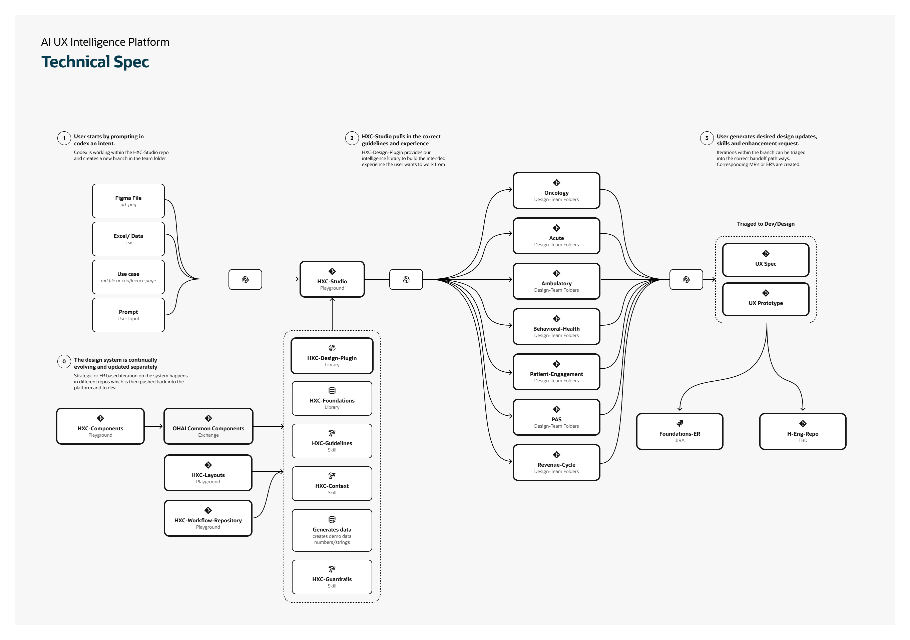
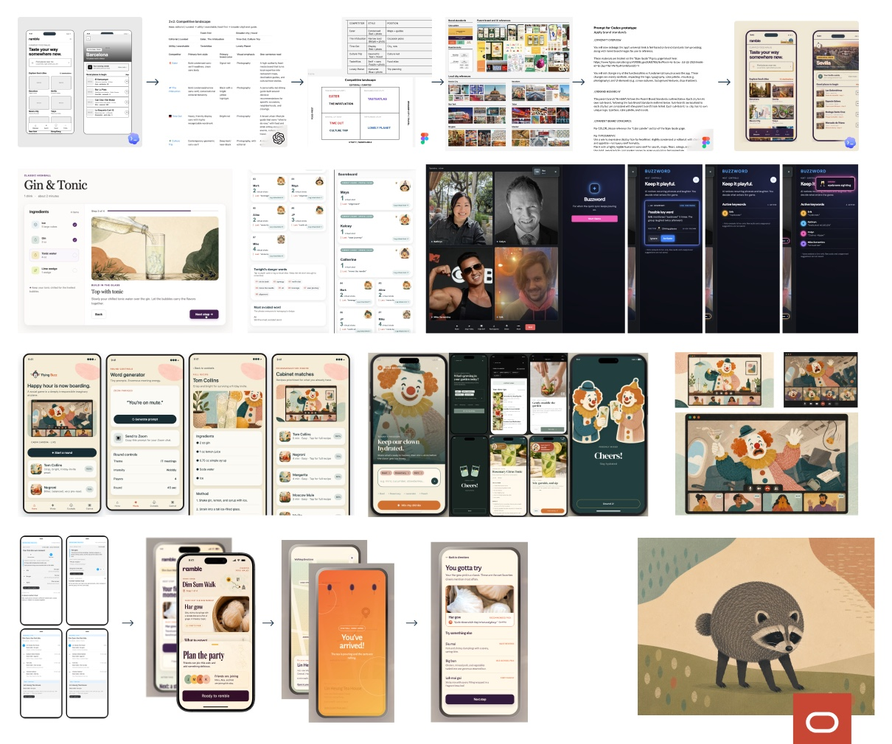

Oracle Health
Director, User Experience Design, 2024 to present.
I joined Oracle Health to lead the design of the core task-management experience for an AI-native EHR. It started with ambulatory clinical workflows and grew into one universal pattern for every role across the whole product. Out of that work I formed Experience Core, our platform design team, and built its AI workflows with engineering, which took concept-to-testable-prototype from weeks to days. This work has resulted in nine AI patent applications I am a named inventor on.
Most of this is unreleased, so the cases are told through method and diagrams.

From Inbox to Action List
What started as a fix for the clinician inbox is now Oracle Health’s universal work list pattern across the entire EHR platform: every role, every workflow, from ambulatory, acute, patient administration, rev cycle and reimbursements. One place to see the work and do it, instead of a different queue in every corner of the product.
Public release of this experience is set for Oracle Health Summit, Q1 2027.
Experience Core
Oracle Health already had a patterns team and a shared goal of one design language. What it lacked was structure: thirty-four patterns, several managers, no single thread of ownership.
I rebuilt the team around the clinician’s journey instead of the pattern list. Six segments, each with a lead designer and research partner who own their segment, end to end. We called ourselves Experience Core.
The team runs on six habits. Concepts, components, and guidelines define what we make. Cadence, governance, and evangelism define how we work. Guidance lives where the work lives, not in redlines, but in a living, coded reference app.

From intent to working code
Instead of handing off Figma comps, specs and guidelines to our partners, we’ve reimagined our design process around a shared platform. The design system’s components, layouts, guidelines, and guardrails live in one place that designers and the AI tooling both read from. A designer states an intent, the platform pulls in the right context, and the result is a spec and a working prototype in the same pass, routed to the right team.
Going from concept to testable prototype has gone from weeks to days, and every team now works from the same source of truth.

AI talk in tech has come rapid-fire, and for most people it has been overwhelming. The way through is always together, and it’s even better when it’s fun. We gather everyone for regular team collaborations with no product work, no clinical constraints, a made-up brief for each team, and one rule: ship a working prototype by day’s end. Be silly, be free, be together.